Timing Belt
Timing Belt Disassembly / Assembly
Timing Components/Crankshaft Pulley:
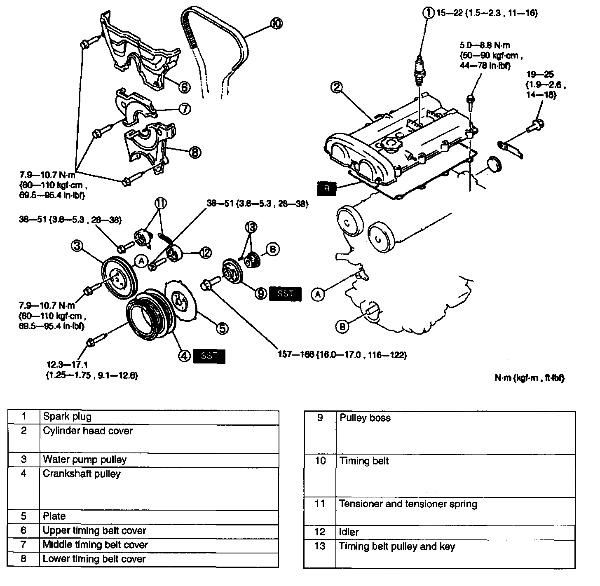
1. Disassemble in the order indicated in the table.
2. Assemble in the reverse order of disassembly.
Crankshaft pulley disassembly note
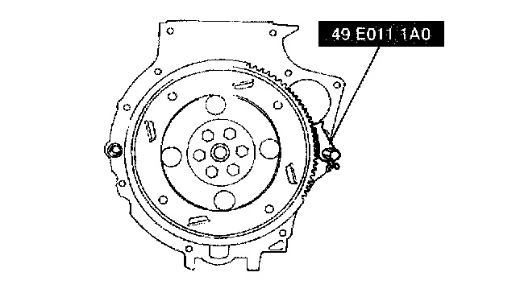
^ Hold the crankshaft using the SST.
Pulley boss disassembly note
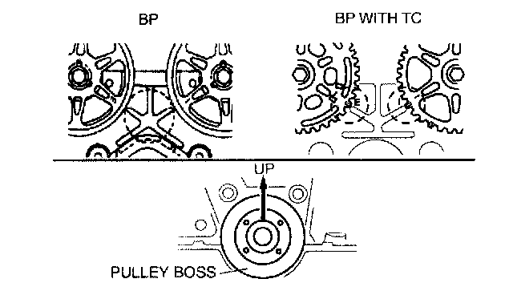
1. Turn the crankshaft clockwise and align the timing marks of the pulleys.
Note:
^ For the crankshaft side, face the locating pin on the pulley boss straight up.
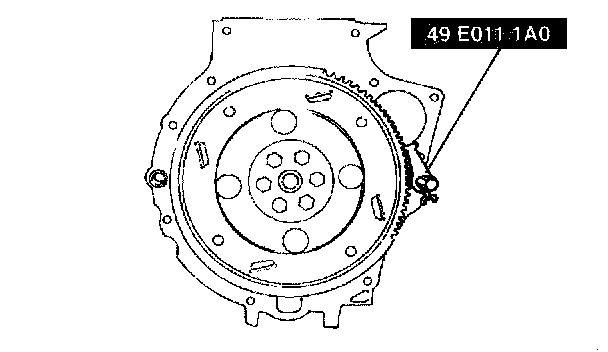
2. Hold the crankshaft using the SST.
Timing belt disassembly note
Caution:
^ The following will damage the belt and shorten its life; Forcefully twisting it, turning it inside out, or allowing oil or grease on it.
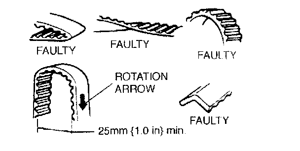
1. Mark the timing belt rotation on the belt for proper reinstallation.
2. Loosen the tensioner lock bolt.
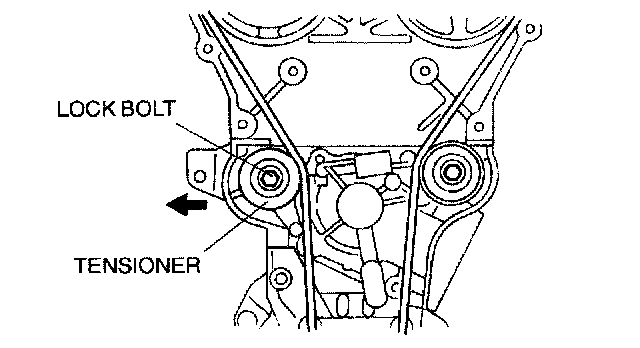
3. Push the tensioner in the direction of the arrow and hand-tighten the lock bolt.
4. Remove the timing belt.
Timing belt pulley and key assembly note
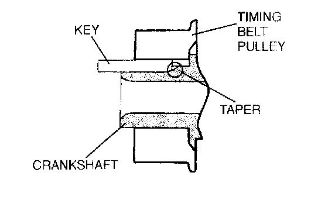
^ Insert the key into the timing belt pulley, facing the tapered side downward. Push the key until it stops.
Tensioner and tensioner spring assembly note
1. Install the tensioner spring so that the chamfer of dumping rubber faces the right side.

2. Push the tensioner in the direction of the arrow and hand-tighten the lock bolt.
Timing belt assembly note
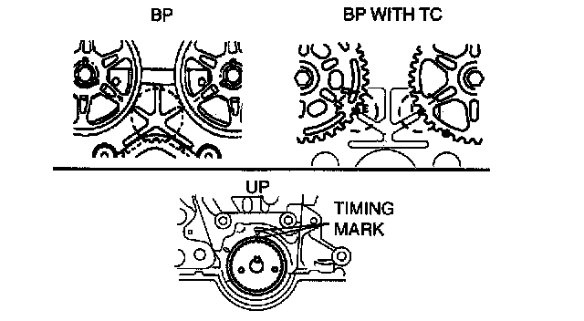
^ Verify that all timing marks are correctly aligned.
Pulley boss assembly note
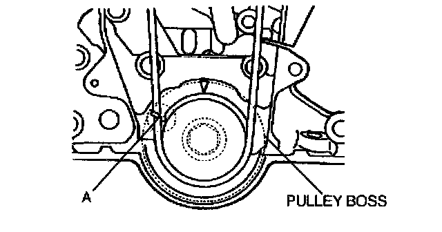
1. Install the pulley boss and pulley lock bolt. Turn the crankshaft clockwise 1 and 5/6 times, and verify that the timing mark and the tension set mark A are aligned.
2. Loosen the tensioner lock bolt to apply tension to the timing belt. Do not apply tension other than that of the tensioner spring.
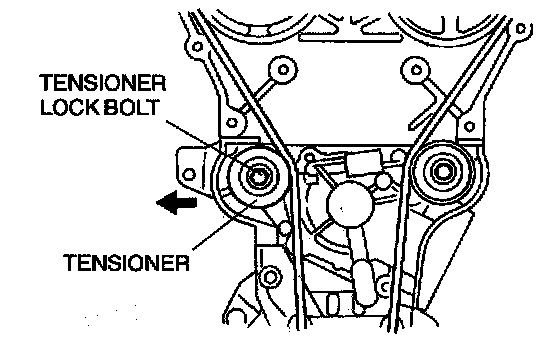
3. Tighten the tensioner lock bolt.
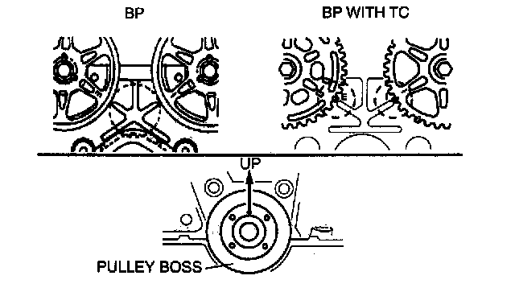
4. Turn the crankshaft clockwise 2 and 1/6 times, and verify that all timing marks are correctly aligned.
Note:
^ For the crankshaft side, face the locating pin on the pulley boss straight up.
5. Reinspect for the belt deflection at the point indicated by applying moderate pressure 98 N (10 kgf, 22 lbs.)
Timing belt deflection 8.5 - 11.5 mm (0.34 - 0.45 inch)
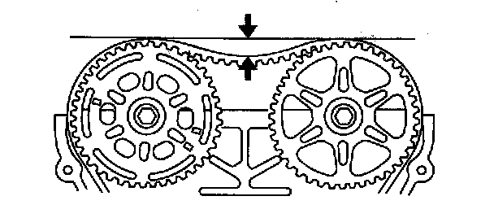
6. If the timing belt deflection is not as specified, remove the timing belt and repeat from timing Belt
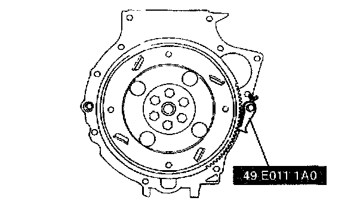
7. Hold the crankshaft by using the SST.
Crankshaft pulley assembly note
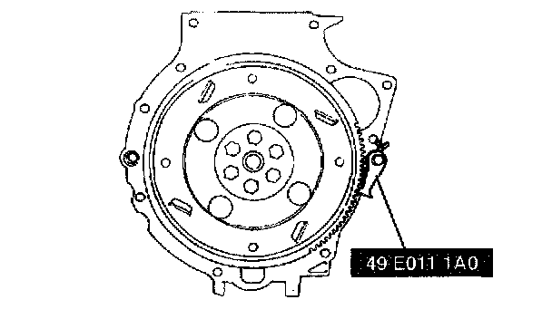
^ Hold the crankshaft by using the SST.
Cylinder head cover assembly note
1. Verify that the grooves on the cylinder head cover are free of oil, water and other foreign material.
2. Install the cylinder head cover gasket into the cylinder head cover.
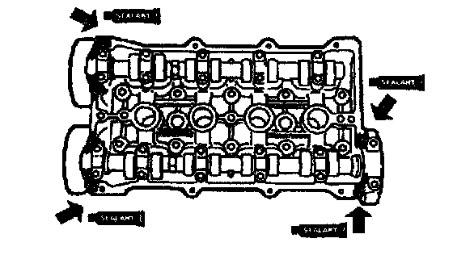
3. Apply silicone sealant to the cylinder head.
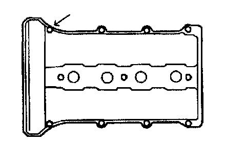
4. Hand-tighten the cylinder head cover bolt.
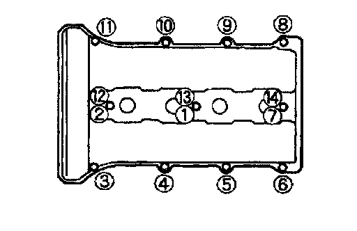
5. Tighten the cylinder head cover bolts in two or three steps.